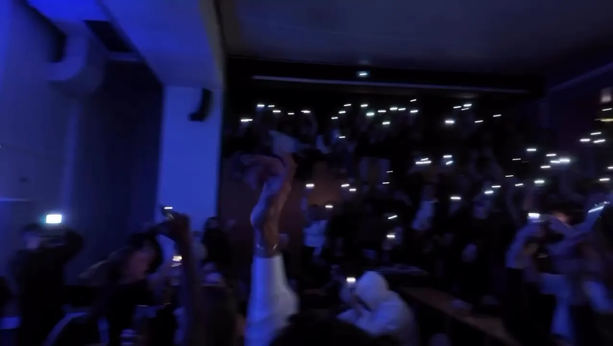
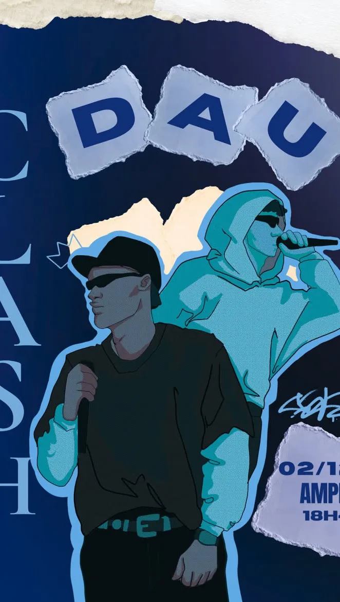

DAU’Clash
- Projet
- Scène · Rap battle et éloquence
- Prochaine date
- Lieu
- Amphi 1, Paris Dauphine – PSL
- Édition
- 8e édition
Un micro, deux étudiants face à face et un jury. Le clash de Dauphine, à l’amphi 1.
Au DAU’Clash, des étudiants s’affrontent à l’oral devant un jury invité. Le format emprunte aux Rap Contenders le principe du face-à-face et fait de l’écriture et de la présence sur scène le cœur de la soirée.
La 8e édition du DAU’CLASH arrive ! À 18 h 45, le 2 décembre, 4 dauphinois prendront place dans l’Amphi 1 pour un clash qui promet de faire vibrer la salle.
La 7e édition s’est jouée devant un amphithéâtre plein, éclairé en bleu, avec un public qui a fini téléphones levés.
